어느 병사의 주석 스푼 이야기
게시: 2018-11-05T06:30:00+09:00
화제의 영화였던 마블 스튜디오의 '어벤저스 3 : 인피니티 워'에서 묘한 소품이 있었습니다. 토르가 우주 공간에서 떠돌다가 가디언즈 오브 갤럭시(이하 가오갤) 일당의 우주선에 구출해낸 뒤, 뭔가 음식을 먹는 장면이 있었습니다. 거기서 토르는 상당히 조그만 구리 사발 같은 것에서 뭔가 수프 같은 것을 스푼으로 먹고 있었지요. 그런데 나중에 타노스가 가오갤 일당 중 가모라를 붙잡은 뒤에, 가모라에게 '너 배고프지 않냐?' 라며 뭔가 먹을 것을 건네는데, 그게 토르가 먹던 것과 똑같이 생긴 조그만 구리 사발 같은 것이었어요.
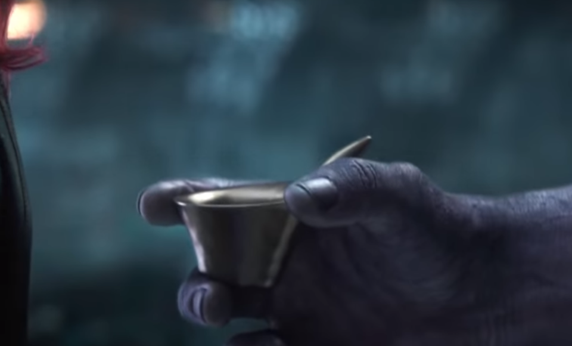
(유튜브를 열심히 검색해서 간신히 찾은 화면입니다. 원래도 좀 작은 사이즈의 사발인데 타노스의 손에 쥐니 거의 컵이네요. 토르가 먹던 사발 장면은 아무리 검색해도 안 나옵니다.)
(인피니티 워의 명장면이지요. 우주 전체에 천둥의 신을 코 앞에 두고 당당히 대적할 수 있는 존재가 그렇게 많지 않습니다.)
저는 그 장면을 보고 '영화 관계자들이 소품에 신경을 별로 안 썼나 보다, 타노스네 집이나 가오갤 우주선에서나 똑같은 사발과 스푼을 쓰는게 말이나 되나' 라는 생각도 했지만, 동시에 '서양애들은 사발에 그냥 입대고 마시는 것을 진짜 싫어하는 모양이다'라고도 생각했습니다. 타노스-가모라 신에서, 가모라는 그 사발을 받아들자마자 집어던졌는데, 그때 보니 어차피 사발 속에 든 수프에는 건데기도 없어서 그냥 사발째 들고 마시면 되는 거였는데, 타노스는 친절하게도 그 사발에 스푼도 담아서 건넸었거든요.
그 장면을 보니 히틀러의 마지막 순간을 그린 독일 영화 '몰락'(Der Untergang)의 끝부분에서 역시 굉장히 인상 깊었던 부분이 생각났습니다. 히틀러가 자살한 뒤 남은 총통부 소속 병력들과 비서 등의 직원들이 도망을 치는 와중이었는데, 밤이 되어 어느 폐가에서 일행이 통조림을 따먹고 있었습니다. 그때 죽은 줄 알았던 다른 독일 관리가 나타나자 반갑게 맞으면서 '일단 뭐 좀 먹어둬라'라며 개봉한 통조림을 내미는데, 스푼도 딱 꽂아서 함께 주더라고요. 그걸 보고 '야, 저 독일놈들은 소련군으로부터 허겁지겁 도망치는 중에도 저렇게 깡통 1개당 스푼 1개씩을 꼭 챙겨서 왔나보다'라며 감탄했었습니다.
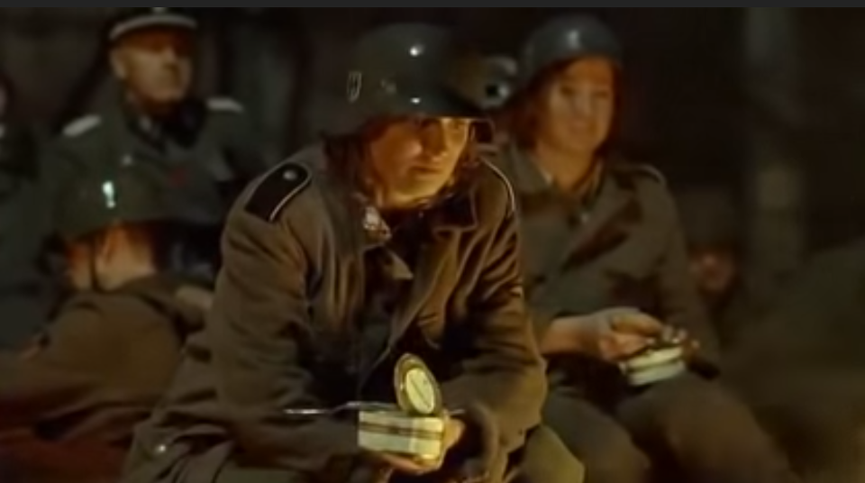
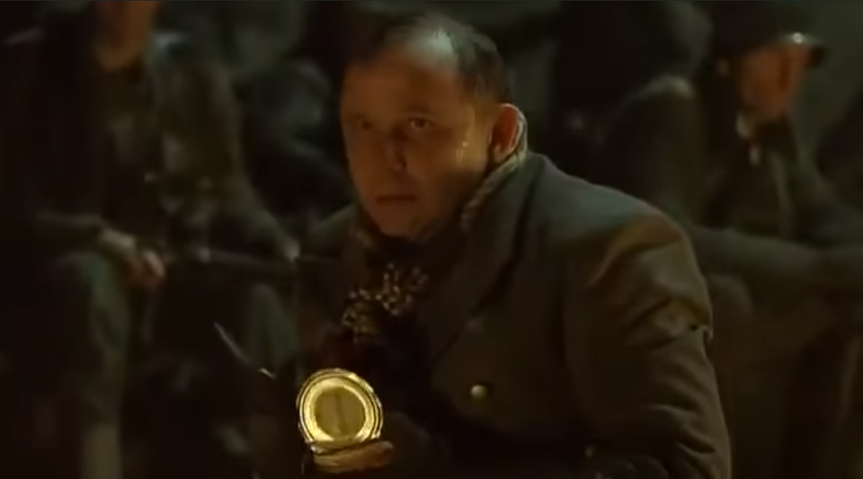
(제가 감탄했던 그 장면들입니다. 통조림과 함께 건네는 저 스푼을 보십시요.)
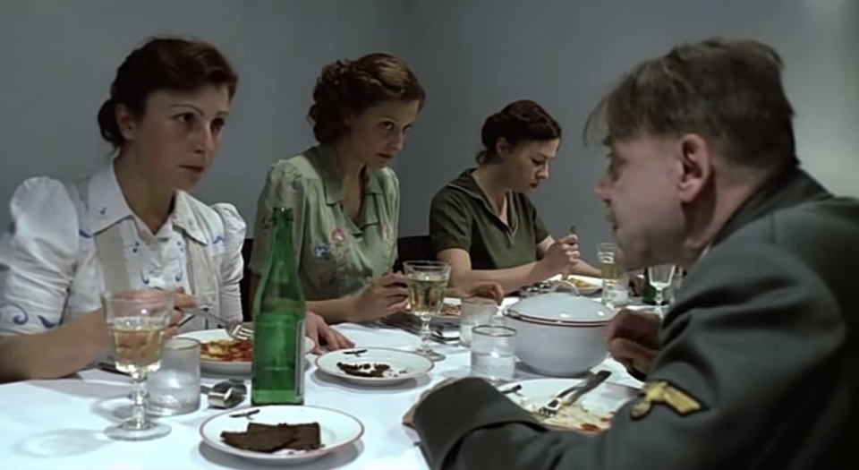
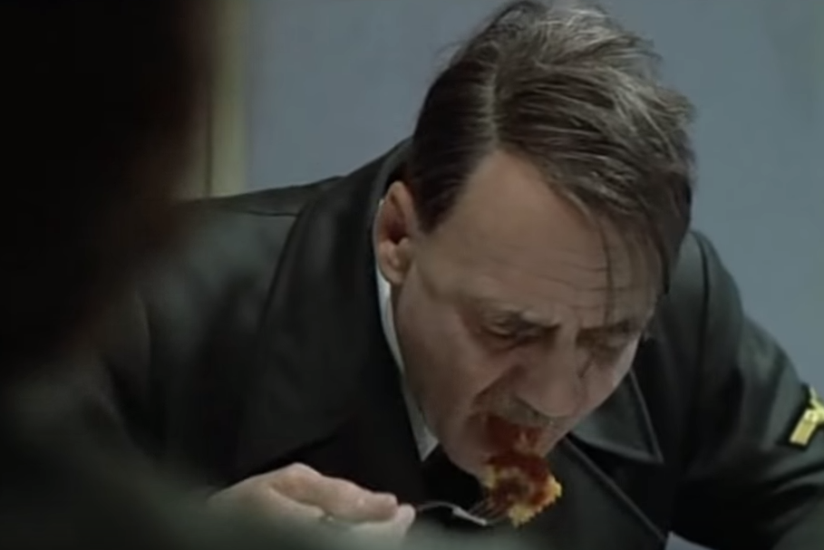
(여러가지 패러디로 유명해진 이 '몰락'이라는 영화에서 제가 가장 인상 깊게 본 장면은 저 히틀러의 마지막 식사 장면이었습니다. 채식주의자이던 히틀러가 먹던 저 마지막 요리는 어떤 것이었을까요 ? 영화 속에서는 토마토 소스를 넣은 파르팔레(farfalle)나 라비올리(ravioli) 형태의 파스타처럼 보였는데, 검색해보니 실제로 토마토 소스 파스타를 마지막으로 먹었다고 합니다. 저 장면에서 히틀러는 식사를 마치고 “Danke, das war sehr gut, Fräulein Manziarly" (고맙네, 아주 맛있었어, 미스 만치알리)라고 말하지요.)
병사들에게 스푼은 엄청나게 중요한 것입니다. 저는 카투사로 입대했을 때 먼저 논산 훈련소에서 10주간 훈련을 받았는데, 요즘도 그런지 모르겠습니다만 식사를 할 때 젓가락은 없고 그냥 포카락(포크 + 숟가락) 1개만 받았거든요. 식판은 공용이었지만 그 포카락은 개인 소지품이었습니다. 훈련병에게는 그게 사실 총보다도 더 중요한 장비였지요. 미군 부대에 배치를 받은 뒤에도 스푼의 중요성은 결코 떨어지지 않았습니다. 미군도 표준 장비 중에 mess kit라고 해서 스텐리스 반합과 스푼, 포크, 나이프 같은 것을 받습니다. 그러나 실제로 그것으로 식사를 한 경우는 단 한번도 없었습니다. 제가 있던 부대는 야전 전투부대가 아니라서 1년에 1번 정도 FTX라고 야전 훈련을 3박4일인가 4박5일인가 했었습니다. 그때 대부분의 식사는 MRE로 했는데, 그 속에 플라스틱 스푼이 들어었었거든요. 플라스틱 포크나 나이프는 없고 그냥 플라스틱 스푼만 들어있었습니다. 생각해보면 병사들이 야전에서 먹는 음식은 어차피 스푼 1개만 있으면 되는 것이 대부분입니다. 야전에서 스테이크를 썰 일도 없고 우아하게 완두콩을 포크로 찍어 먹을 할 일도 없으니까요.
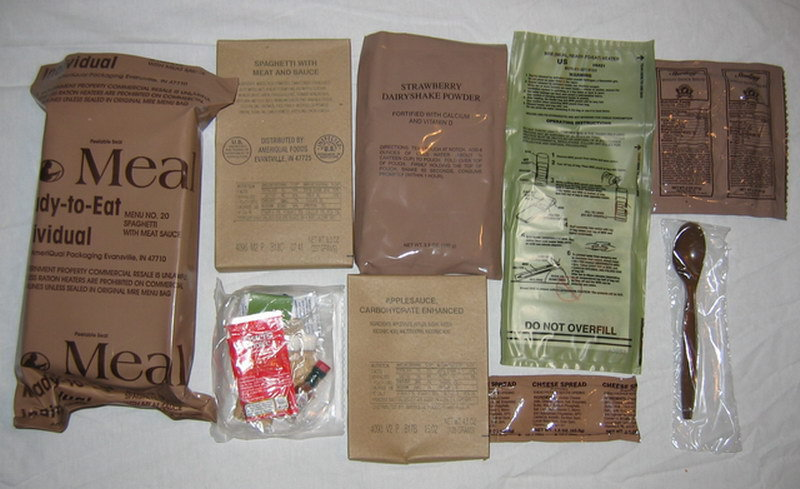
(지금 생각해봐도 정말 맛이 없었던 MRE... 그래도 저 속에 가끔 들어있던 오트밀 쿠키바(oatmeal cookie bar)는 정말 맛있었습니다.)
병사들에게는 포크나 나이프 따위는 필요없고 오로지 스푼만 있으면 된다는 것은 1815년, 워털루 전투에서도 마찬가지였습니다. 2015년 초 벨기에의 워털루 전투 현장에서 건축 공사를 하던 중 한 구의 유골이 발견되었는데, 워털루 전투 당일 사망한 영국 병사의 것이었습니다. 흉부에 프랑스제 샤를빌르(Charleville) 머스켓 소총 구경에 딱 맞는 납탄이 박힌 채 발견된데다, 휴대하고 있던 2개의 예비 부싯돌도 영국군이 사용하던 브라운 베스(Brown Bess) 소총에 딱 맞는 크기의 암회색 부싯돌이었거든요. 프랑스군은 주로 노란색의 부싯돌을 썼습니다. 이 병사의 시신은 건설 현장의 불도저에 의해 두개골 부분이 날아가는 등 일부 훼손되기는 했으나, 전반적으로 보존 상태가 매우 좋았습니다. 키가 158 cm 정도로서, 당시 기준으로도 다소 작은 편이었던 이 병사의 주머니에서는 22개의 여러 나라 동전과 함께, 스푼 1개가 발견되었습니다. 이 시신에 대해 소개한 기사에는 이 스푼이 어떤 재질로 만들어진 것이었는지는 나오지 않았으나, 혹시 이 스푼에 이 병사가 소속되었던 연대 마크가 있지 않을까 싶어 엑스레이 촬영을 해본 사진을 보니 금속제는 확실합니다. 아마 당시 식기를 만드는데 많이 사용되던 백랍(pewter, 보통 주석이라고 번역되는 경우가 많지만 사실은 대략 95%의 주석과 약간의 구리 및 안티몬으로 만들어진 합금)으로 만들었을 것 같습니다. 저는 그래도 이 병사가 금속제 스푼을 가지고 있었다는 것에서 그나마 따뜻한 느낌을 받았습니다. 저는 혹시 이 병사의 스푼이 나무로 만들어진 것이면 어쩌나 걱정했거든요.
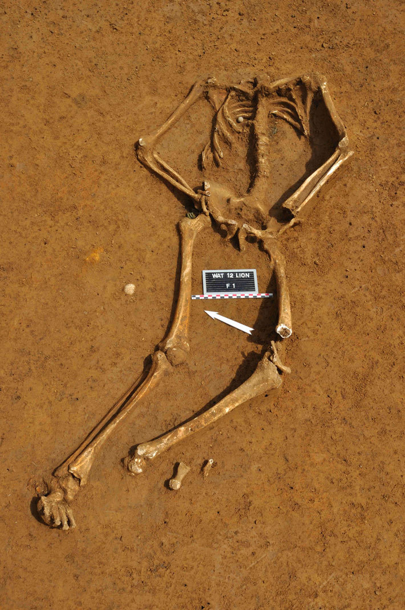
(저 불쌍한 시신의 갈비뼈 부분에 작고 둥근 회색 구체 하나가 보이시나요 ? 프랑스제 머스켓 볼입니다.)
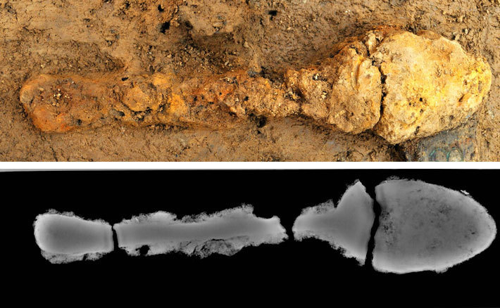
(이 병사의 주머니에 들어있던 스푼과 그 엑스레이 사진입니다.)
의외로 19세기 초까지만 하더라도 유럽의 금속 생산량이 그렇게까지 풍부하지는 않아서, 금속 대신 나무를 써도 되는 물건들은 나무로 만드는 경우가 많았습니다. (어느 책에서 읽었는지 기억이 나지 않지만) 나폴레옹 당시 유럽 전역의 머스켓 소총 숫자와 농기구 숫자 전체를 비교해보면 소총 숫자가 훨씬 더 많았다고 합니다. 청동기 시대부터 금속은 주로 무기를 만드는데 사용되었고, 농부들의 괭이나 쟁기는 나무로 만들었다고 하는데 그런 전통이 놀랍게도 19세기 초반까지도 이어졌던 것이지요. 심지어 레미제라블의 미리엘 주교님도 은접시를 장발장이 훔쳐가는 바람에 나무 접시로 음식을 먹어야 했쟎습니까 ? 19세기 중반인 미국 남북 전쟁을 배경으로 하는 명작 서부 영화 '황야의 무법자' (The Good, the Bad, and the Ugly) 처음 장면에서 '나쁜놈'으로 나오는 리 밴클리프가 멕시코 농부와 눈싸움을 벌이며 식사를 하는 장면이 나오는데, 거기서도 두 사람은 나무로 만든 스푼을 사용했습니다. 그러나 워털루 전투 당시의 영국 병사들은 최소한 스푼만큼은 백랍으로 만든 것을 가지고 있었으니, 농부보다는 더 나은 대우를 받았던 셈이지요.
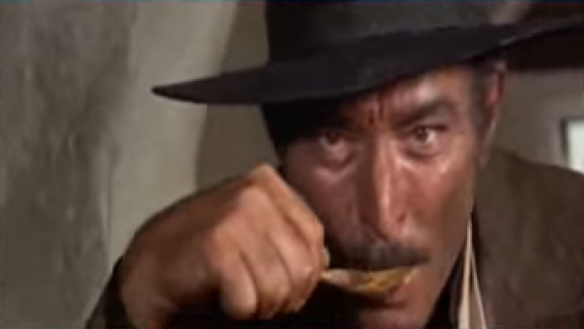
사족 1)
동양 삼국에서는 희한하게도 한국에서만 숟가락이 중요하게 사용되는 편입니다. 식사를 할 때, 특히 주식인 쌀밥을 숟가락으로 먹는 나라는 우리나라 뿐이니까요. 일본은 원래 젓가락으로만 식사를 하지요. 국은 그냥 그릇을 입에 대고 마십니다. 중국도 스푼은 국물을 떠먹을 때만 사용하고, 쌀밥을 먹을 때는 밥그릇을 입에 대고 젓가락으로 쓸어넣는 편입니다. 특히 중국식 숟가락은 조그만 국자 모양의 깊고 평평한 바닥을 가지고 있어서 그걸 입 안에 집어 넣는 것은 부적절하고, 숟가락에 입술을 대고 숟가락을 기울여 그 안의 국물을 입으로 흘려넣어야 합니다. 보통은 거기서 후루룩 소리를 내며 빨아먹게 되지요. 우리나라 입장에서 보면 일본이나 중국이나 별로 점잖지 않은 습관을 가진 셈입니다.
병사들 말고 점잖은 서양인들의 스푼 사용법은 굳이 따지자면 중국인들에게 좀더 가까운 편입니다. 정찬에 있어서 스푼은 수프를 먹을 때만 사용되는데, 제대로 예절을 지키려면 우리나라 사람들이 밥이나 국을 먹을 때처럼 스푼 전체를 입에 집어넣는 것이 아니라 중국식 숟가락을 쓸 때처럼 입술을 삐죽 내밀고 수프 국물을 스푼의 옆면으로부터 받아 마셔야 합니다. 이때 절대로 후루룩 소리가 나면 안 됩니다. 예전에 영국 드라마 채널에서 방영한 Hornblower 시리즈를 볼 때, 주인공 혼블로워가 오찬에 초대되어 수프를 먹을 때 입술을 삐죽 내밀고 스푼으로부터 수프를 먹는 모습을 보고 '참 보기 흉하게 먹는구나' 라고 생각했는데, 알고 보니 그게 제대로 된 방식이라고 해서 놀랐던 것이 기억납니다.
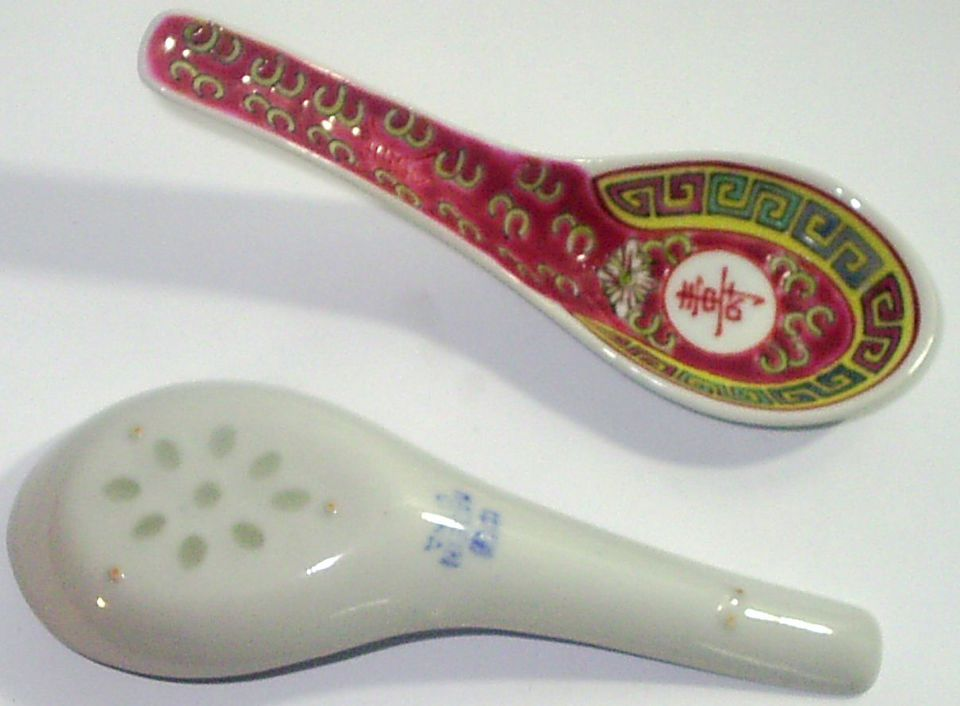
(중국식 스푼입니다.)
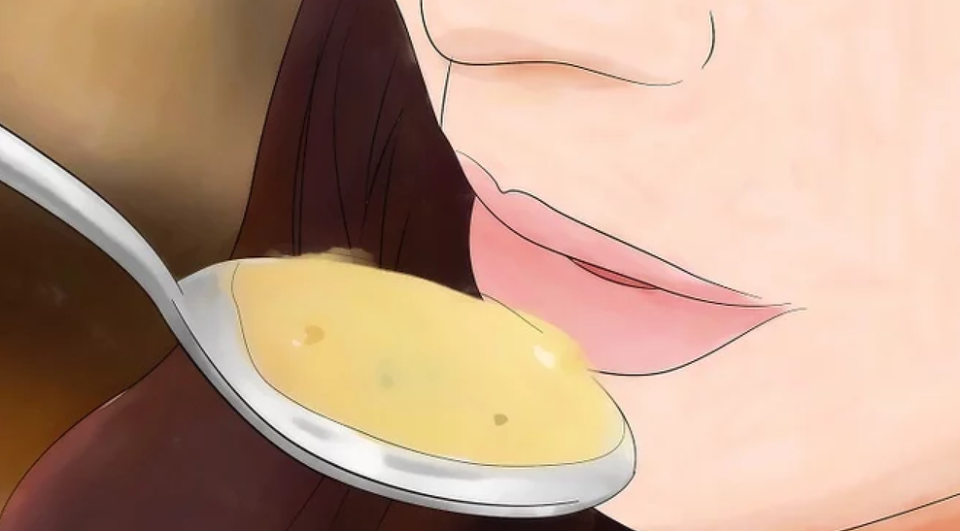
(양식에서 점잖게 수프를 먹는 방식이라고 하네요. 사실 후루룩 쩝쩝 소리만 안 내면 되지 뭐 이렇게까지 먹어야 하나 싶습니다.)
사족 2)
병사들의 스푼 사랑은 이라크 전에서도 이어졌습니다. 저로서는 믿어지지 않는 이야기인데, 이라크에서 어느 집 안에 잠복해있던 반군들과 뒤엉켜 육박전을 벌이던 미육군 레인저 병사가 처음에는 대검을 뽑아 상대를 찌르려 했으나 손이 닿지 않아, 마침 군장 탄띠에 꽂아두었던 플라스틱 MRE 스푼을 뽑아들고 상대를 찔러 죽였다는 기사가 있었습니다. ( https://www.ebay.com/itm/US-Army-Mess-Kit-Wyott-Complete-/283196753881 ) 비록 confirm 된 이야기라고 제목을 달았지만 이건 정식 뉴스도 아니고, 아무리 생각해봐도 이건 믿지 못할 전형적인 가짜 뉴스 같습니다. 심지어 존 윅도 연필로 사람을 죽였지 플라스틱 MRE 스푼으로 사람을 죽이진 않았쟎습니까 ?
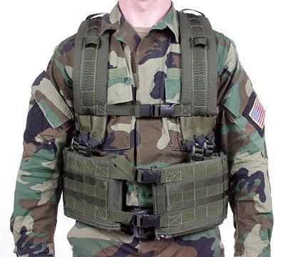
(그 병사가 스푼을 꽂아두었다는 MOLLE(몰리라고 읽습니다)입니다. MOLLE는 Modular Lightweight Load-carrying Equipment의 약자입니다. 그냥 군장 탄띠라고 생각하시면 되겠습니다. 전투기나 탱크 사들이는 것도 중요하지만 병사 개개인의 장구류도 중요하지요. 특히 야시경은 매우 중요한 장비같은데...)
사족3)
지금도 그렇지만, 팔레스타인을 포함한 중동 지방에서는 전통적으로 스푼이나 포크같은 식기를 쓰지 않았습니다. 예수도 맨손으로 음식을 드셨습니다. 그렇다면 예수님을 포함한 중동 사람들은 어떻게 국물있는 음식을 먹었을까요 ? 차라리 묽은 국같은 것은 (일본 사람들이 하듯) 그릇을 들고 마시면 되겠지만, 스튜같은 어정쩡한 음식은 스푼이 없다면 정말 곤란하지 않겠습니까 ? 예수님께서 손에 소스를 잔뜩 묻힌 채로 손가락을 쪽쪽 빨아가며 스튜를 먹었다 ? 그건... 점잖지만 믿음이 약한 신도들의 믿음을 흔들리게 하는 장면이 될 수도 있습니다.
다행히 그런 일은 없었다고 합니다. 즉, 당시 사람들은 스푼 없이도, 우아하게 스튜를 먹을 수 있었습니다. 즉, 중동에서 주로 먹는 얇고 넓적한 피타 빵이 스푼 대용 역할도 했습니다. 피타 빵을 뜯어서, 알맞게 접으면 스푼처럼 쓸 수 있었던 것입니다. 이렇게 빵에 국물을 묻혀서 먹어야 피타도 먹을 만 했다고 하네요. 스튜같은 국물있는 음식이 없을 때도, 피타에 하다못해 물이라도 꼭 찍어서 먹었답니다. 생각해보니 멜 깁슨 주연의 스코틀랜드 독립 투쟁 영화 "브레이브 하트"에서도, 치마(퀼트)를 입은 멜 깁슨과 그 일당이 들판에서 그런 식으로 뻑뻑한 빵을 주걱 삼아 뭔가 스튜 같은 음식을 퍼먹던 장면이 나왔습니다.
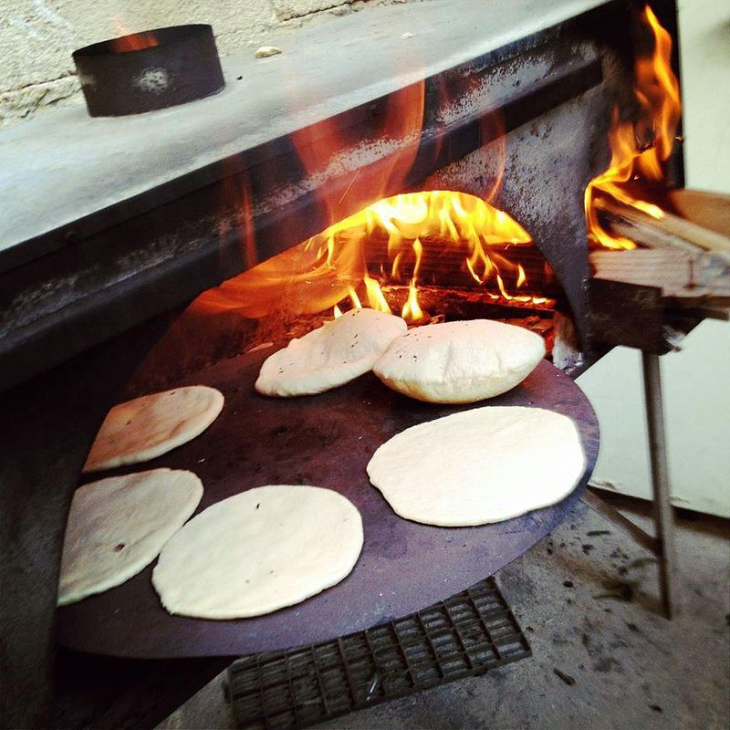
(이스라엘에서 피타 빵을 굽는 모습입니다.)
사족4)
본문에는 저 워털루 현장의 병사가 나무 스푼이 아니라 주석 스푼을 가지고 있어서 다행이라고 써놨습니다만, 꼭 금속제 스푼이 나무 스푼보다 더 비싼 것만은 아닙니다. 마하트마 간디는 암살당하고 난 뒤에 안경과 시계 하나, 샌달 한 켤레 등 매우 조촐한 소지품만을 유품으로 남겼습니다. 그렇게 가진 것이 없었던 간디도 식기류는 개인 물품을 가지고 있었는데, 그렇게 남긴 유품 중에는 금속제 사발 하나와 나무로 만든 스푼 2개와 포크 1개가 있었답니다. 그것들이 2016년 경매에 붙여진다는 뉴스를 봤는데, 시작가가 22,900 파운드(약 3천3백만원)이라고 씌여있네요. 실제로는 얼마에 낙찰되었는지 모르겠습니다. 어쨌든 이것들이 나무로 만들어진 것이지만 세계에서 가장 비싼 스푼일 것 같기는 합니다. 인도에서는 맨손으로 식사를 한다고 들었는데, 간디가 스푼과 포크를 가지고 있었던 것을 보면 꼭 그런 것만도 아닌 모양이네요. 영국 유학파라서 그랬을까요 ?
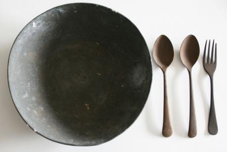
(진짜 간디가 쓰던 사발과 스푼, 포크랍니다.)
Source : https://www.archaeology.org/issues/79-1303/features/535-waterloo-british-soldier-dominique-bosquet
https://www.mreinfo.com/mres/
https://tribunist.com/news/report-army-ranger-gets-confirmed-kill-with-mre-spoon/
https://en.wikipedia.org/wiki/MOLLE
https://www.youtube.com/watch?v=po5F65mrjn4&vl=en
https://www.youtube.com/watch?v=s9oviaIumJM&index=15&list=PLgXs8EKlGi7C8iNJdAWGbYZgPVnNZraPL
https://nypost.com/2017/11/24/this-was-hitlers-final-meal/
https://www.wikihow.com/Eat-Soup
https://www.youtube.com/watch?v=fX7zVa19Iqw
https://en.wikipedia.org/wiki/Pita
https://www.easterneye.biz/gandhis-food-bowl-wooden-spoons-auction/